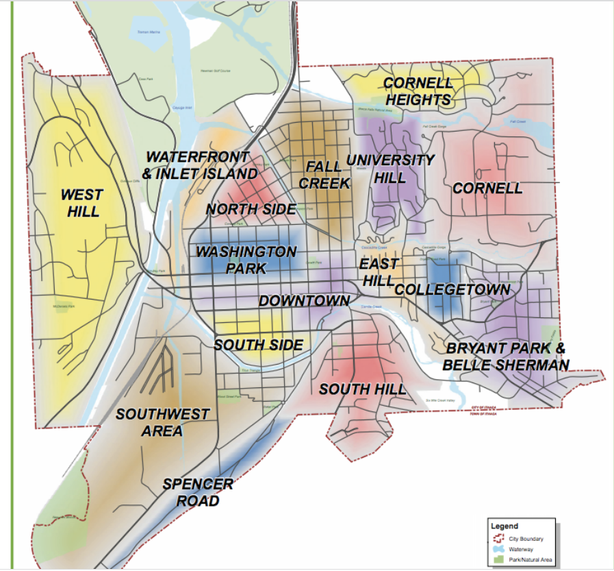

Housing Around Cornell#

When and Where to Look for Housing#
March/April is ideal time to find a lease that begins in August, though there are usually a few places still available in June/July. Common places for looking for apartments include the Cornell University Housing, Sublets, and Roommates Facebook Group, Craigslist, and Apartments.com
Ithaca Neighborhoods#
 It helps to describe Ithaca’s geography a bit. Ithaca is surrounded by three hills and a lake (to the north). Cornell is on the east hill, Ithaca College on the south hill. Downtown is situated in the middle of the hills. Around Ithaca are a variety of neighborhoods that students can live in.
Collegetown#
Collegetown is the closest neighborhood to Cornell and within walking distance to Hollister Hall. In terms of amenities, Collegetown has many restaurants, a 7/11, a UPS store, a branch of the local GreenStar Co-Op and some other smaller convenience stores. It’s a popular location for undergrads to live and tends to have more of a vibrant/party atmosphere. Collegetown has both apartment-style living and houses.
Fall Creek#
Fall Creek is one of the most beloved neighborhoods in Ithaca and a popular place for graduate students to live. Housing is primarily comprised of homes (of various shapes, sizes, and colors) that graduate students share. It is down the hill from Cornell and so students often take buses (about a 15-minute ride from Hollister). At the bus stop on Linn Street you can also access the Cascadilla Gorge Trail. Walking up these steps is a fun activity for the summer that can take about 30 minutes but leads you very close to Hollister. The Commons, which has restaurants/live music/small shops is within a 5-10 minute walk from Fall Creek. The downtown branch of GreenStar Co-Op is within walking distance, but a bus or a car will be required to access Wegmans/Trader Joes/stores on Meadow Street. Buses: 10/30/32; about a 10-15 minute bus ride.
East Hill#
East Hill can be anywhere from a 15-30 minute walk from Engineering Quad and about a 15 minute bus ride. You can also easily walk to Riley Robb from this location. A popular apartment complex in East Hill is Maplewood which is a newer complex that has a lot of amenities (in unit washer/dryer and dishwasher, gym) that aren’t as common in the houses in Fall Creek. East Hill Plaza has a grocery store, P&C Fresh, as well as Collegetown Bagels, a gym, and some other small stores. Buses: 17,51,82
Cayuga Heights#
A more upscale suburb of Ithaca that is more residential and quiet. There are small apartment complexes and houses for rent. Cayuga Heights is not within walking distance of Campus. Amenities include Tops Market, the Ithaca Mall, and Target which will require a bus or car. Buses: 30/32/36/37
South Hill#
South Hill is situated between downtown Ithaca and Ithaca College and has house-style living options. South Hill is populated with a mix of students that either go to Cornell or Ithaca College. Buses: 11
Downtown Ithaca#
Downtown Ithaca is usually populated by a mix of graduate and professional students. The shops in the Commons tend to have apartment options above. There are also more options for newer apartment buildings like Ironworks Ithaca and the Lux Apartments. Downtown will require either a bus or car to travel up to Cornell’s campus. Buses: 10/14/15/20/21/22
Lansing#
While not technically part of the City of Ithaca, a significant number of graduate students nonetheless call Lansing home. Located about a 20-minute bus ride away from the main Cornell campus, apartments and homes in Lansing often have lower rents than those in central Ithaca. Located north of Cayuga Heights, Lansing offers amenities such as Tops Market, Triphammer Mall, Target, and the Tompkins County International Airport that are a bus ride away. Buses: 30/32/70
On-Campus Housing#
Cornell graduate students can also opt for on-campus housing managed by Cornell’s Student and Campus Life department. There are two main options for on-campus housing: Hasbrouck Apartments and Cornell-run cooperative housing.
Hasbrouck Apartments#
Hasbrouck apartments consists of 338 single- and family units located in North Campus close to both the Appel Commons, the Robert Purcell Community Center, and the Cornell golf course. It is also a convenient 10-minute walk to Cornell’s central campus. While being a viable option for all graduate students, many graduate students with young families choose to live there due to its proximity to campus, active community center, and the Cornell University Child Care Center. Units in Hasbrouck can come either furnished or unfurnished. Buses: 30/37/81
Cooperative Housing#
Cornell owns eight cooperative residences (co-ops) that are one of the cheapest housing options on campus. All co-ops are jointly managed by their 10-35 members, that split tasks such as cooking, cleaning, and maintenance amongst each other. They are either coed or women-only, and several house a mixture of undergraduate and graduate students. Graduate students interested in staying at a coop should contact the house they are interested in beginning early February (when the selection process starts). Most coops also accept members on a rolling basis, although this should be confirmed with the coop in question.